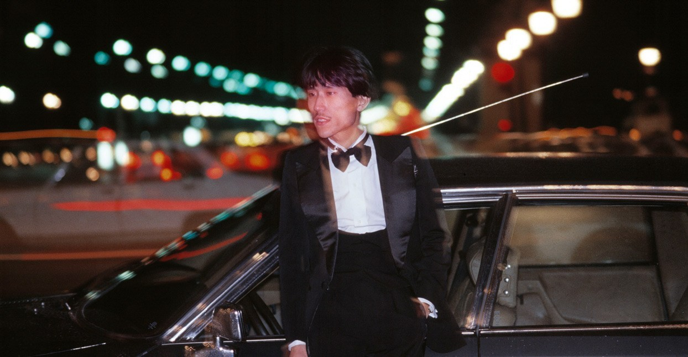
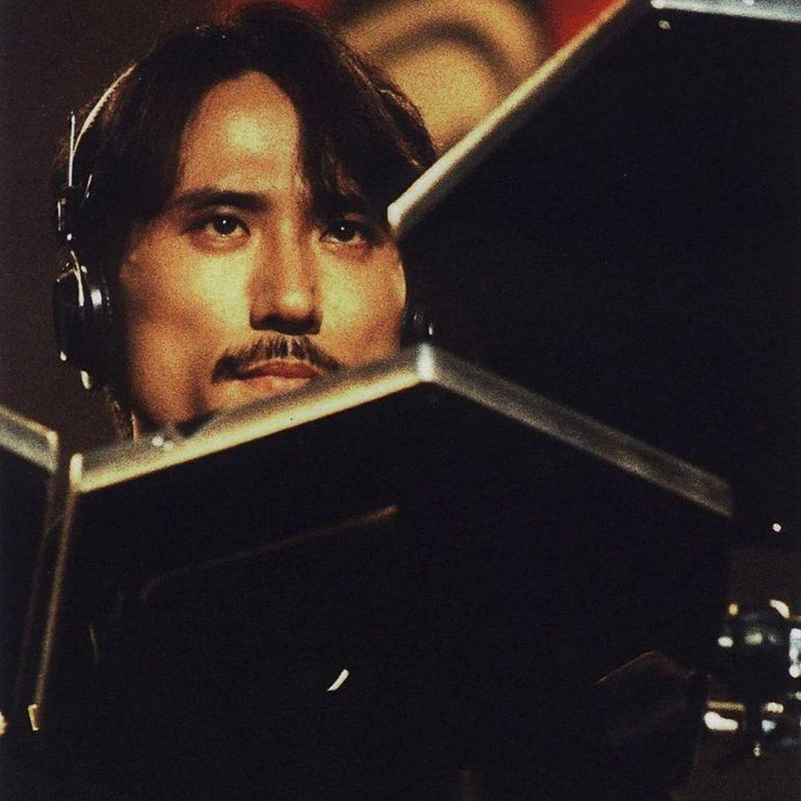

Yukihiro Takahashi
Yukihiro in 3 photos


Japanese musician, born 6 Jun 1952, Tokyo. Younger brother of Nobuyuki Takahashi. The members of YMO have many solo works and Mr. YT is also the man of many works. In addition to his activities in Y.M.O., Beatniks and reformed Sadistics Mika Band, he has been producing solo works without rest.